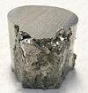

nickel

Definition: Nickel is a chemical element with symbol Ni and atomic number 28. It is a silvery-white lustrous metal with a slight golden tinge. Nickel is a hard and ductile transition metal. Pure nickel is chemically reactive but large pieces are slow to react with air under standard conditions because a passivation layer of nickel oxide forms on the surface that prevents further corrosion. Even so, pure native nickel is found in Earth's crust only in tiny amounts, usually in ultramafic rocks, and in the interiors of larger nickel–iron meteorites that were not exposed to oxygen when outside Earth's atmosphere.
Source: Wikipedia
Wikipedia Page
Wikidata Page